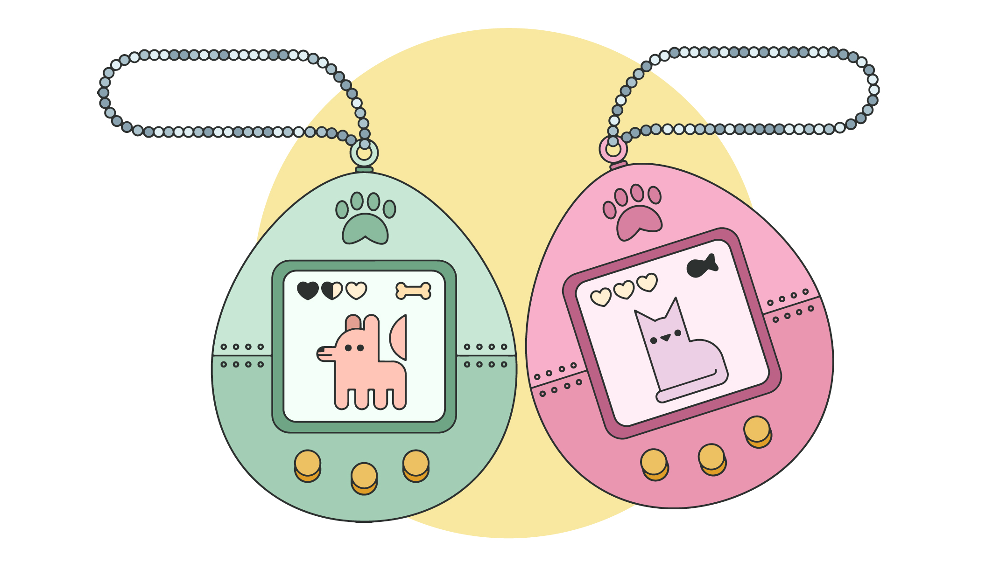
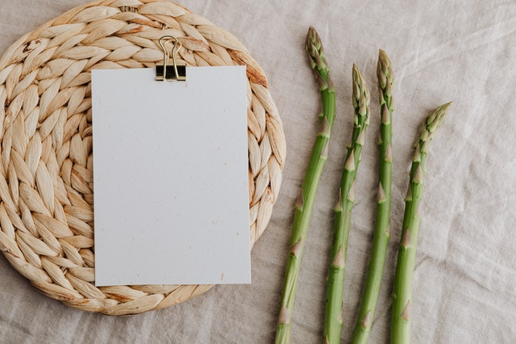

The projects below were all completed in the first month of a five star rated bootcamp. The program will equip me with the following competencies and best practices as a full stack software developer:
C# • .NET Core • Active Server Pages / ASP.net • JavaScript • Flexbox • MVC • HTML • CSS • Grid • TDD • Agile (Scrum) • Object Oriented Programming (OOP) • AJAX • JSON • React • Restful APIs • Responsive Design / Mobile • Structured Query Language (SQL) • Relational Databases / MS SQL • Source Control / GitHub
View each project on Github by clicking the corresponding image.
Virtual Pet Shelter

Virtual Pet Shelter gives you the ability to create and take care of virtual pets! You can chooese to create an Organic or Robotic Pet, monitor their stats as the game progresses, and interact with them. This project was a team project demonstrating OOP principles and TDD.
Recipe Keeper

Recipe Keeper allows you to view a recipe's ingredients and cooking instructions. You can add or remove ingredients, and get recommendations for dietary concerns. This was an independent project utilizing lists and OOP principles.
Car Garage

In order to pass each of the ten tests in Car Garage, I followed best practices in test-driven development. This independent project was completed to demonstrate proficiency with TDD.